사출(프레스)금형설계기사 (2015-05-31 기출문제)
1과목: 금형설계
1. 특수 사출성형기인 가스사출성형기를 이용하여 성형품을 생산하였을 때의 장점이 아닌 것은?
- 수지를 절약할 수 있다.
- 리브 근처의 싱크마크를 줄일 수 있다.
- 다색 다재질 성형을 할 수 있다.
- 일체성형이 가능하여 성형품의 부품수를 줄일 수 있다.
(정답률: 86%)

2. 다음 중 강제 언더컷 처리용으로 적합한 성형 재료는?
- 폴리스티렌(PS)
- 폴리아미드(PA)
- 폴리프로필렌(PP)
- 메타크릴수지(PMMA)
(정답률: 80%)
3. 다음 사출금형 중 특수금형에 속하지 않는 것은?
- 3단 금형
- 분할 금형
- 나사 금형
- 슬라이드 코어 금형
(정답률: 87%)
4. 핫 러너 금형의 장점이 아닌 것은?
- 3매 구조로 하지 않고도 다점 게이트를 사용 할 수 있다.
- 성형 사이클이 단축된다.
- 러너의 압력손실이 적다.
- 수지 색상 바꾸기가 쉽다.
(정답률: 84%)
5. 다음 중 중앙에 긴 구멍이 뚫려있는 부시모양의 성형품, 구멍이 뚫려 있는 보스 등에 적합한 이젝터는?
- 핀 이젝터
- 각핀 이젝터
- 슬리브 이젝터
- 스트리퍼 플레이트 이젝터
(정답률: 91%)
6. 다수개 빼기 금형에서 러너의 길이를 20mm, 게이트의 랜드 길이를 1.5mm, 그리고 러너의 직경을 4.0mm로 했을 때, 게이트 밸런스의 값은 약 얼마인가? (단, SG/SR = 7%이다.)
- 0.31
- 0.20
- 0.18
- 0.13
(정답률: 48%)
7. 다음 중 사출금형 부품의 사용 재질로써 부적합한 것은?
- 슬라이드용 가이드 : STC3 ~ STC5
- 앵귤러 핀 : SACM3 ~ SACM5
- 앵귤러 캠 : SM50C ~ SM55C
- 슬라이드 홀더 : SM50C ~ SM55C
(정답률: 62%)
8. 다음 중 웰드라인(weld line)발생을 가장 억제할 수 있는 게이트 방식은?
- 오버랩 게이트
- 터브 게이트
- 서브마린 게이트
- 디스크 게이트
(정답률: 73%)
9. 가소화 능력을 수치로 나타낼 때에 열가소성 수지의 기준 수지는?
- 폴리에틸렌(PE)
- 폴리아미드(PA)
- 폴리스티렌(PS)
- 폴리카보네이트(PC)
(정답률: 67%)
10. 사출속도를 빠르게 하는 고속 사출의 장점으로 틀린 것은?
- 각종 분자배향을 증가시킨다.
- 냉각에 따른 압력저하가 적다.
- 수축이 감소하고 치수정밀도가 높아진다.
- 냉각속도 및 사이클 타임을 단축시킬 수 있다.
(정답률: 64%)
11. 프레스의 능력 표시법에 속하지 않는 것은?
- 압력능력
- 운동량
- 작업능력
- 토크능력
(정답률: 75%)
12. 다음 다이셋트(die set) 중 각 모서리에 한 개씩, 4개의 가이드 포스트가 있고, 평행도가 뛰어나며, 높은 강성과 펀치와 다이가 정밀하게 안내되는 것은?
- FB형
- DB형
- CD형
- BB형
(정답률: 86%)
13. 프로그레시브 금형(progressive die)에서 파일럿 핏(pilot pin)을 사용하는 목적 중 가장 적당한 것은?
- 소재를 눌러주기 위해서
- 가공된 스크랩을 떨어뜨리기 위해서
- 소재의 이송피치를 정확히 맞추어주기 위해서
- 가공된 제품을 금형으로부터 취출시키기 위해서
(정답률: 81%)
14. 펀치를 이용하여 제품(blank)을 다이 속으로 밀어 넣어서 밑바닥이 달린 원통용기의 벽 두께를 얇게 하고 벽 두께를 고르게 하여 원통도 향상이나 표면을 매끄럽게 하는 가공법은?
- 드로잉 가공(drawing)
- 재 드로잉 가공(redrawing)
- 역 드로잉 가공(reverse drawing)
- 아이오닝 가공(ironing)
(정답률: 68%)
15. 다음 중 사이드 커터(side cutter)의 역할로 가장 적합한 것은?
- 소재 고정 장치
- 소재 검출 장치
- 소재 누름 장치
- 소재 이송 제한 장치
(정답률: 86%)
16. 전단가공시 블랭크가 펀치 하면(下面)에 달라붙는 것을 방지할 수 있게 설치하는 것은?
- 맞춤 핀
- 키커 핀
- 스톱 핀
- 리턴 핀
(정답률: 87%)
17. 판두께 2㎜이고 전단저항이 40kgf/mm2의 연강판을 지름 100㎜의 원형으로 블랭킹하려 한다. 이 때 시어 크기를 2㎜정도로 하고 시어계수를 0.6으로 할 때, 블랭킹력은 약 얼마인가?3
- 10.1톤
- 13.1톤
- 15.1톤
- 20.1톤
(정답률: 68%)
18. 굽힘 금형에서 스프링 백(spring back)의 양이 커지는 것과 관계가 없는 것은?
- 두께가 동일한 재료일지라도 굽힘 반경이 커지면 커진다.
- 같은 굽힘 반경일지라도 두께가 얇으면 커진다.
- 연질 재료에 비하여 경질 재료의 스프링 백이 크다.
- 가압속도가 고속일수록 증가한다.
(정답률: 62%)
19. 다음 중 프로그레시브금형의 특징이 아닌 것은?
- 생산속도가 증가한다.
- 보수나 교환하기가 쉽다.
- 사용 재료 및 프레스 기계의 제약이 없다.
- 복잡한 형상의 제품도 몇 개의 스테이지로 나누어서 간단하고 견고한 금형 구조로 가공 할 수 있다.
(정답률: 62%)
20. 다음 중 드로잉 금형에서 용기의 형상이 원통이고 일정한 두께로 아이어닝 할 경우 일반적인 클리어런스(CP)의 값으로 적합한 것은? (단, t = 소재의 두께이다.)
- Cp ≒ ( 1.1 ~ 1.2 ) t
- Cp ≒ ( 1.4 ~ 2.0 ) t
- Cp ≒ ( 0.1 ~ 0.5 ) t
- Cp ≒ ( 2.5 ~ 2.8 ) t
(정답률: 83%)
2과목: 기계제작법
21. 선반 바이트에서 요구되는 성질로 틀린 것은?
- 경도가 높을 것
- 마모 저항이 적을 것
- 점성 강도가 높을 것
- 사용상 취급에 용이할 것
(정답률: 64%)
22. 연삭 숫돌 직경이 200㎜일 때 연삭속도는 약 얼마인가? (단, 회전수 2000rpm이다.)
- 1128 m/min
- 1256 m/min
- 2124 m/min
- 3140 m/min
(정답률: 78%)
23. 쾌속조형기술(rapid prototyping)가공의 특징으로 틀린 것은?
- 비 숙련자에 의한 운용이 가능하다.
- 적층에 따른 단차가 발생할 수 있다.
- 어떠한 재료로도 제품 제작이 가능하다.
- 시제품 형상에 따른 재료만 있으면 된다.
(정답률: 65%)
24. 금형용 탄소강 재료를 플레인 밀링 커터로 회전수 30rpm 으로 가공할 때 이송량은? (단, 커터 잇수 12, 한날당 이송길이 0.25㎜이다.)
- 30㎜/min
- 36㎜/min
- 75㎜/min
- 90㎜/min
(정답률: 72%)
25. 치공구의 표준화 설계시 고려하지 않아도 되는 항목은?
- 치공구 부품의 표준화
- 치공구 형식의 표준화
- 치공구 재료의 표준화
- 치공구 중량의 표준화
(정답률: 85%)
26. 사출금형의 구조에서 고정측 형판과 가동측 형판으로 구성되어 있으며, 파팅라인에 의하여 고정측과 가동측으로 분할되는 금형은?
- 2매 구성 금형
- 3매 구성 금형
- 4매 구성 금형
- 특수 금형
(정답률: 80%)
27. 페러데이(Faraday)의 전기분해법칙에 따라 전해액 중에 넣은 두 개의 전극 직류전압을 걸어 그 회로에 전류가 흐르면 도금장치와는 반대로 양극금속(공작물)은 흐르는 전기량에 비례하여 전해액 중에 용출작용을 하여 가공이 이루어지는 가공법은?
- 레이저가공
- 초음파가공
- 전주가공
- 전해가공
(정답률: 86%)
28. 기계공작 방법 중 소성가공이 아닌 것은?
- 판금
- 전조
- 용접
- 압출
(정답률: 78%)
29. 연삭 가공시 숫돌차 표면의 기공에 칩이 끼어 연삭성이 나빠지는 형상은?
- 로우딩 현상
- 세딩 현상
- 드레싱 현상
- 트루잉 현상
(정답률: 83%)
30. 컴파운드 금형으로 그림과 같은 제품을 가공할 때 필요한 전단력은 약 얼마인가? (단, 소재의 전단저항 σs는 40kgf/mm2이다.)
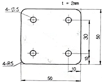
- 19085 kgf
- 20340 kgf
- 21660 kgf
- 24850 kgf
(정답률: 49%)
31. 전해 연마의 설명으로 옳은 것은?
- 숫돌이나 숫돌입자를 사용한다.
- 전기 도금법을 말한다.
- 교류를 사용하여 연마한다.
- 인산이나 황산 등의 전해액 속에서 전기도금의 반대방법으로 한다.
(정답률: 66%)
32. 수공구인 렌치(Wrench)와 스패너(Spanner)의 설명으로 틀린 것은?
- 재질은 공구강, 가단주철이 많다.
- 모든 렌치와 스패너는 폭 조절이 안된다.
- 양구스패너의 크기는 일반적으로 너트의 치수로 표시한다.
- 양구스패너는 양쪽 스패너 폭의 크기가 서로 다르게 되어 있다.
(정답률: 82%)
33. 다음 중 슈퍼피니싱에 사용되는 연삭액으로 가장 적합한 것은?
- 경유
- 그리스
- 비눗물
- 피마자 기름
(정답률: 95%)
34. 플라스틱 금형의 검사에 속하지 않는 것은?
- 수축
- 유동
- 전단각
- 거스러미
(정답률: 85%)
35. 반전 가공 시 밑면 R을 작게 하기 위한 방법으로 틀린 것은?
- 가공 깊이를 얇게 한다.
- 가공 간극을 작게 한다.
- 소모비가 나쁜 전극을 이용한다.
- 전극을 자주 교환해서 사용한다.
(정답률: 78%)
36. 직물 또는 피혁 등의 연한 재료의 회전 원반에 광택제를 부착시키고 공작물을 접촉시켜 마찰에 의해 다듬질 하는 가공법은?
- 호닝(honing)
- 랩핑(lapping)
- 버핑(buffing)
- 슈퍼피니싱(superfinishing)
(정답률: 64%)
37. NC의 발달과정을 4단계로 분류한 것 중 맞는 것은?
- NC → CNC → DNC → FMS
- CNC → NC → DNC → FMS
- NC → CNC → FMS → DNC
- CNC → NC → DNC → DNC
(정답률: 89%)
38. NC공작기계에서 S자형 경로나 크랭크형 경로등 어떠한 경로라도 자유자재로 공구를 이동시켜 연속절삭을 할 수 있도록 하는 제어는?
- 절대좌표결정 제어
- 위치결정 제어
- 직선절삭 제어
- 윤곽절삭 제어
(정답률: 76%)
39. 다음 중 탭(TAP)이 부러지는 원인으로 가장 적합하지 않은 것은?
- 드릴 구멍이 일정하지 않을 때
- 소재보다 경도가 높을 때
- 핸들에 과도한 힘을 주었을 때
- 탭이 구멍 밑바닥에 부딪쳤을 때
(정답률: 84%)
40. 사인바를 이용하여 각도를 측정하고자 한다. 다음 중 각도 측정에 필요없는 측정기는?
- 사인바
- 블록 게이지
- 다이얼 게이지
- 테이퍼 게이지
(정답률: 42%)
3과목: 금속재료학
41. 다음 중 불변강의 종류가 아닌 것은?
- 인바
- 코엘린바
- 쾌스테르강
- 엘린바
(정답률: 87%)
42. 다음 중 고속도강의 담금질 온도(quenching temperature)로 가장 적당한 것은?
- 720℃
- 910℃
- 1250℃
- 1590℃
(정답률: 62%)
43. 400℃로 뜨임한 조직이 산에 부식되지 가장 쉬운 조직은?
- 페라이트(ferrite)
- 오스테나이트(austenite)
- 오스몬다이트(osmondite)
- 마텐자이트(martensite)
(정답률: 60%)
44. 주철의 성장원인으로서 틀린 것은?
- 가열 냉각 반복에 의한 팽창
- 순철의 흑연화 억제에 의한 팽창
- 흡수되어 있는 가스에 의한 팽창
- 고용원소인 Si의 산화에 의한 팽창
(정답률: 62%)
45. 철강재료의 열처리에서 많이 이용되는 S곡선이 의미하는 것은?
- T.T.S 곡선
- C.C.C 곡선
- T.T.T 곡선
- S.T.S 곡선
(정답률: 77%)
46. Mo 금속은 어떤 결정 격자로 되어 있는가?
- 면심입방격자
- 체심입방격자
- 조밀육방격자
- 정방격자
(정답률: 69%)
47. 지름 15㎜의 연강봉에 500kgf의 인장하중이 작용할 때 여기에 생기는 응력(kgf/cm2)은 약 얼마인가?
- 11.3
- 128
- 283
- 1132
(정답률: 66%)
48. 표면만 단단하고 내부는 회주철로 되어있어 강인한 성질을 가지며 압연용 롤, 분쇄기 롤, 철도 차량 등 내마멸성이 필요한 기계 부품에 사용되는 특수 주철은?
- 칠드 주철
- 구상흑연 주철
- 고급 주철
- 흑심가단 주철
(정답률: 83%)
49. C와 Si의 함량에 따른 주철의 조직을 나타낸 조직 분포도는?
- 18-8강의 입계부식 조직도
- 마우러 조직도
- Fe-C 복평형 상태도
- 황동의 평형 상태도
(정답률: 85%)
50. 다음 식으로 경도값을 구하는 경도계는?
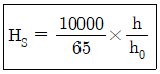
- 로크웰 경도계
- 비커즈 경도계
- 브리넬 경도계
- 쇼어 경도계
(정답률: 86%)
51. 구상흑연 주철에서 흑연을 구상으로 만드는데 사용하는 원소는?
- S
- Cu
- Mg
- Ni
(정답률: 60%)
52. Mg의 용융점은 약 몇 도 인가?
- 700℃
- 650℃
- 600℃
- 550℃
(정답률: 65%)
53. 다음 중 황동의 화학적 성질과 관계 없는 것은?
- 탈아연 부식
- 고온 탈아연
- 지연 균열
- 고온취성
(정답률: 75%)
54. 표준형 고속도 공구강의 주성분을 나열한 것으로 옳은 것은?
- 18% W, 4% Cr, 1% V, 0.8~0.9% C
- 18% C, 4% Mo, 1% V, 0.8~0.9% Cu
- 18% W, 4% Cr, 1% Ni, 0.8~0.9% Al
- 18% C, 4% Mo, 1% Cr, 0.8~0.9% Mg
(정답률: 78%)
55. 금속재료의 표면에 강이나 주철의 작은 입자들을 고속으로 분산시켜 표면층을 가공경화에 의하여 경도를 높이는 방법은?
- 금속 침투법
- 하드 페이싱(hard facing)
- 숏 피닝(shot peening)
- 고체 침탄법
(정답률: 72%)
56. 다음 중 레데뷰라이트(ledeburite) 조직은?
- α고용체와 FeC의 화합물
- α고용체와 Fe3C의 혼합물
- γ고용체와 FeC의 화합물
- γ고용체와 Fe3C의 혼합물
(정답률: 64%)
57. 피아노선의 조직으로 가장 적당한 것은?
- austenite
- ferrite
- sorbite
- martensite
(정답률: 86%)
58. 다음 중 켈밋합금(kelmet alloy)에 대한 설명으로 옳은 것은?
- Pb-Sn 합금, 저속 중 하중용 베어링합금
- Cu-Pb 합금, 고속 고 하중용 베어링합금
- Sn-Sb 합금, 인쇄용 활자합금
- Zn-Al-Cu 합금, 다이캐스팅용 합금
(정답률: 69%)
59. 다음 원소 중 적열취성의 주된 원인이 되는 것은?
- P
- S
- Mg
- Pb
(정답률: 84%)
60. 순철의 자기변태온도는 약 몇 도인가?
- 210℃
- 768℃
- 910℃
- 1410℃
(정답률: 83%)
4과목: 정밀계측
61. 제품치수의 정밀도가 0.1㎜인 부품을 정밀도 0.01㎜의 측정기로 측정했을 때, 그 측정기로 측정한 제품의 측정정도로 다음 중 가장 적합한 것은?
- 0.0101
- 0.02
- 0.2
- 0.1
(정답률: 69%)
62. 표면거칠기를 측정하는 이유는 다양하다. 다음 중 그 이유로 가장 적합하지 않은 것은?
- 가공무늬에 홈의 유무 검토
- 기밀성에 대한 검토
- 내마모성에 대한 검토
- 접착력에 대한 검토
(정답률: 72%)
63. 마스터 기어와 측정용 기어를 백래시 없이 맞물려 회전시켜서 기어의 중심거리 변화를 평가하는 방법은?
- 오버핀 법
- 양 잇면 물림시험
- 활줄 이두께 법
- 편 잇면 물림시험
(정답률: 81%)
64. 전기 마이크로미터의 장단점을 설명한 것 중 잘못 설명한 것은?
- 25㎜ 이상의 긴 변위의 고정도 측정이 가능하다.
- 기계적 확대기구를 사용하지 않아 되돌림 오차가 극히 적다.
- 고장이 났을 때 수리가 용이하다.
- 공기 마이크로미터에 비해 응답속도가 빨라 고속 측정에 적합하다.
(정답률: 77%)
65. 미터나사의 피치가 2.0㎜인 수나사의 유효지름을 측정하고자 할 때 가장 적당한 삼침게이지의 지름은?
- 1.154㎜
- 1.2⑤㎜
- 1.304㎜
- 1.360㎜
(정답률: 61%)
66. 그림과 같은 광 지렛대에서 x = 1㎛의 변위를 Y = 0.1㎜로 확대하려면 광원 “A”와 반사경과의 거리 L은 얼마가 되는가? (단, ℓ= 5㎜이다.)(오류 신고가 접수된 문제입니다. 반드시 정답과 해설을 확인하시기 바랍니다.)
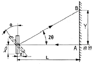
- 125㎜
- 375㎜
- 250㎜
- 500㎜
(정답률: 27%)
67. 유량식 공기 마이크로미터의 특징으로 틀린 것은?
- 정도가 0.2㎛ 이하까지 가능하다.
- 직접측정기이므로 마스터가 필요 없다.
- 압력지시계가 필요 없다.
- 여러 측정 위치에 대한 다원 측정이 가능하다.
(정답률: 66%)
68. 다음과 같은 원심원상의 간섭무늬가 5개 있을 때, 사용광파의 파장 λ가 0.6㎛이면, 중심부와 원 모서리부 사이의 높이차는 얼마인가?
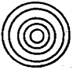
- 2.0㎛
- 1.8㎛
- 1.5㎛
- 1.0㎛
(정답률: 86%)
69. 다음과 같은 측정치의 분포곡선 중 “정확성은 좋지 않으나 정밀성이 좋은” 경우는?
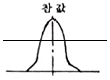
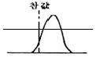
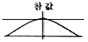
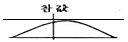
(정답률: 86%)
70. 치형 오차의 측정 방법이 아닌 것은?
- 기초원판식 기어측정기에 의한 방법
- 기초원 조절방식 기어 측정기에 의한 방법
- 직교좌표방식에 의한 방법
- 오버핀에 의한 방법
(정답률: 75%)
71. 다음 중 한계 게이지의 장점으로 가장 옳은 것은?
- 분업방식을 취할 수 있다.
- 조작이 복잡하고 많은 숙련이 필요하다.
- 제품의 실제치수를 읽을 수가 있다.
- 측정된 제품사이의 호환성이 비교적 부족하다.
(정답률: 68%)
72. 측정력에 의한 변형에서 헤르츠(Hretz)법칙에 의한 변형 중 구면과 평면일 경우 탄성변형량을 구하는 공식은 어느 것인가? (단, P는 측정력(kgf), D는 구면지름(mm), L은 평면의 길이(mm), δ는 변형 길이(㎛))
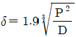
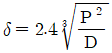
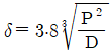
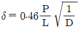
(정답률: 65%)
73. 최대허용오차 MPEE = (3.0 + 4L/1000)㎛인 3차원 좌표 측정기에서 250㎜를 측정 하였을 때 예상되는 오차는? (단, L의 단위는 ㎜이다.)
- 1.0㎛
- 2.0㎛
- 3.0㎛
- 4.0㎛
(정답률: 61%)
74. 지름 28.00㎜의 실린더 안지름을 측정한 결과 28.02㎜이었다. 이때 오차율은 얼마인가?
- 0.02
- 0.0002
- 0.07
- 0.0007
(정답률: 36%)
75. 동심형체의 피측정물을 진원도 측정기로서 측정할 수 없는 항목은?
- 직각도
- 진직도
- 평행도
- 표면거칠기
(정답률: 80%)
76. 게이지류에 사용되는 IT 기본 공차는?
- IT5 ~ IT10
- IT10 ~ IT15
- IT01 ~ IT4
- IT11 ~ IT18
(정답률: 70%)
77. 측장기에 대한 다음 설명 중 옳지 않은 것은?
- 확대기구를 이용하여 작은 길이의 차이를 확대하여 측정하는 것이다.
- 형식은 아베의 원리에 맞는 것과 맞지 않는 것이 모두 있다.
- 표준자와 기타 길이의 기준을 가지고 있다.
- 측미 현미경으로 길이를 직접 측정할 수 있다.
(정답률: 52%)
78. 나사 게이지에 의해서 나사를 검사할 때 정지측 게이지가 몇 회전 이내로 들어가는 것을 게이지에 의한 합격품으로 하는가?
- 2회전 이내
- 5회전 이내
- 7회전 이내
- 10회전 이내
(정답률: 75%)
79. 측정값에 대한 통계적 의미에서의 측정값과 모평균의 차이를 의미하는 용어는?
- 오차
- 잔차
- 치우침
- 편차
(정답률: 64%)
80. 소형 부품의 길이, 각도 및 나사 등을 측정 할 수 있는 측정기로 가장 적합한 것은?
- 측장기
- 스트레인 게이지
- 공구 현미경
- 마이크로미터
(정답률: 73%)